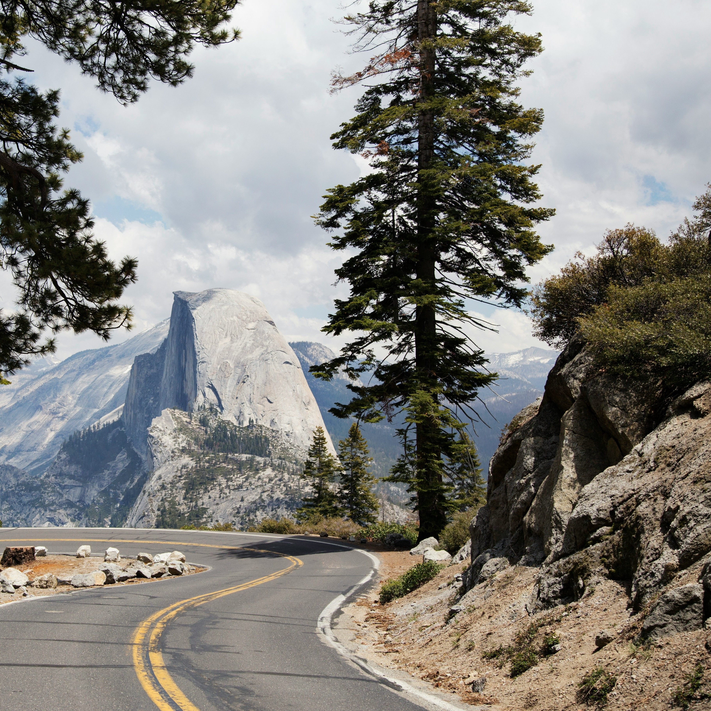
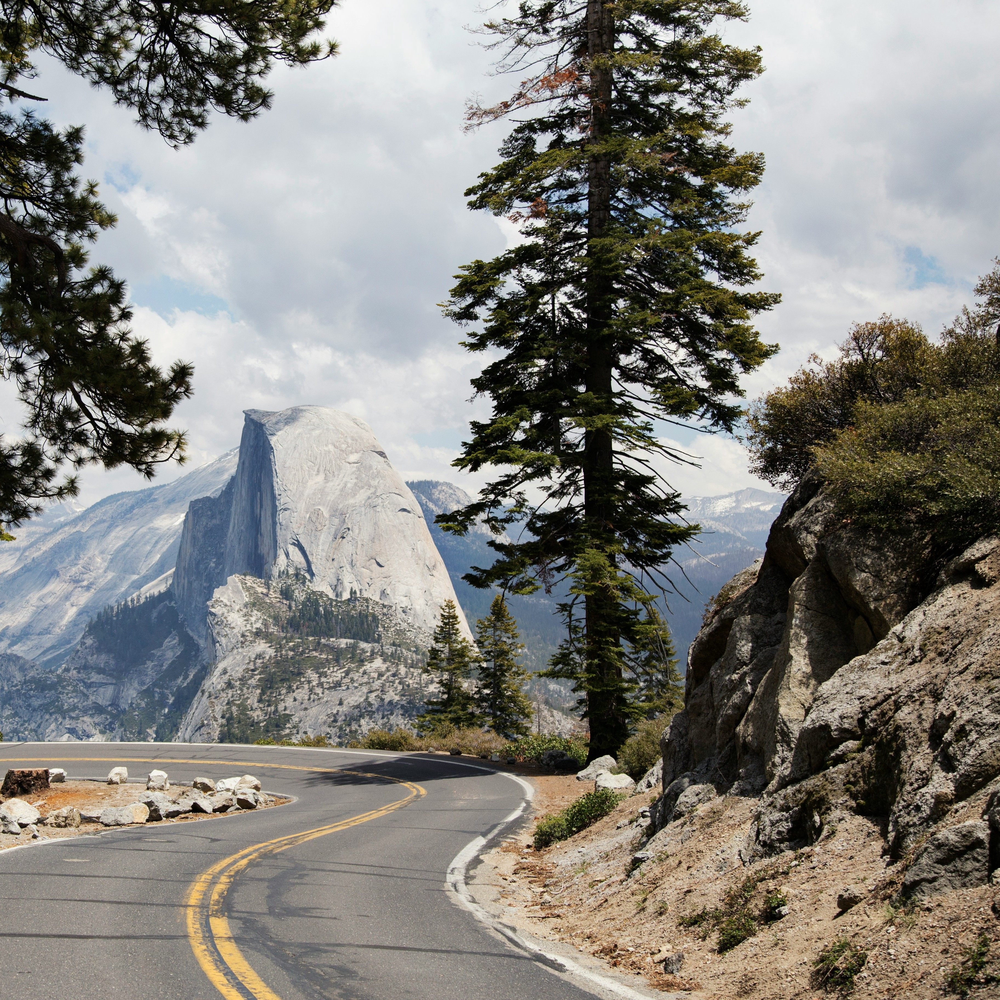

Introduction
Beginning in 1916, the national park was created in order to protect valuable land and preserve their beauty. What began with Yellowstone in 1872, turned into 63 different parks scattered throughout the United States. These hold great importance and pride and in turn are important to the wildlife and America. They often a great site of tourism, and offer grand beauty. It is important to raise awareness about the beauty and importance of these lands so they get the protection and attention they deserve.
Importances
It is important to conserve these parks due to the wildlife and natural resources they have. Many parks have critically endangered animals that need protection. These parks offer ways to support these animals while letting us enjoy the beauty of the land. It is important that these parks receive the awareness they deserve and money, so these lands can keep their beauty and future generations can enjoy the parks as well.
 
